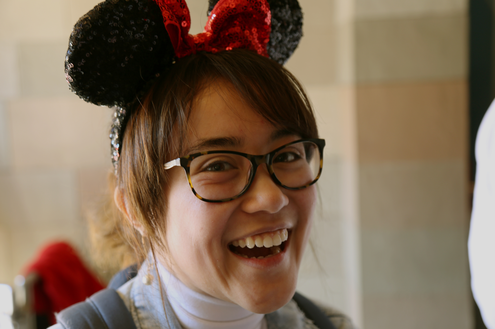
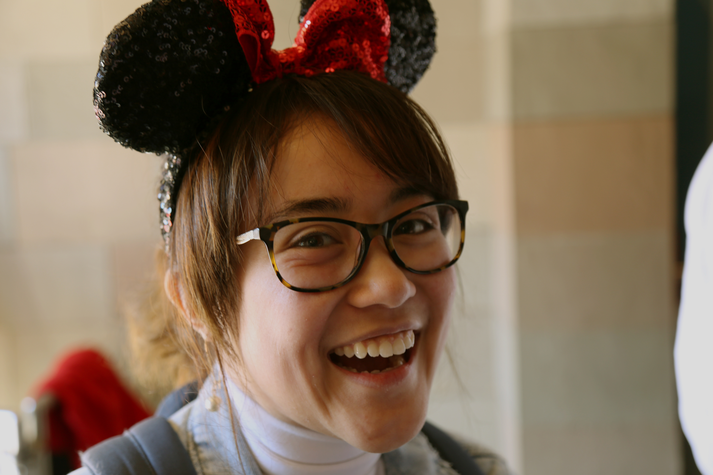

About
I am a software engineer who resides at the intersection of technology and art. I want to utilize my knowledge of computer systems and programming to tell stories, entertain, and evoke emotions. For now my two worlds--technology and art--exist mostly separate. This website will document my journey to combine those two passions of mine.
I am currently enrolled as a student at The University of Texas with expectations to graduate in December of 2020. I am majoring in Computer Science with a certificate
in Digital Arts and Media and a minor in Art History. I have intern experience in backend technologies with Cocolevio, Comcast, and Walt Disney World.
I want to live as fully and authentically as possible.
 


Free Time
I own and operate Serenity Vintage Co, a small online vintage shop. I am the curator, designer, and soon to be stylist/art director. You can find our products at @serenityvintageco on Instagram and Depop.